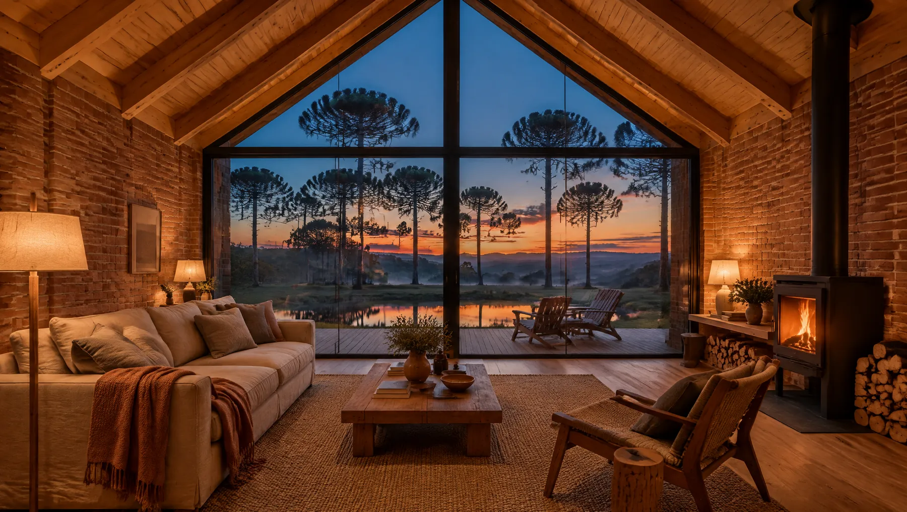
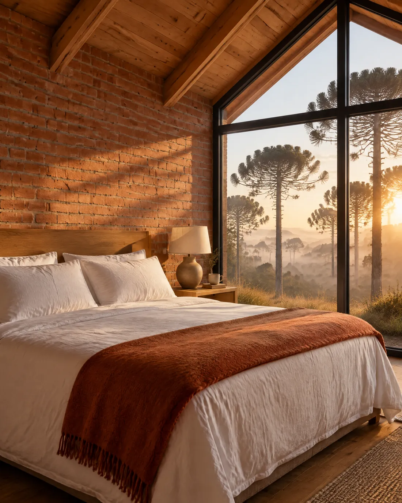
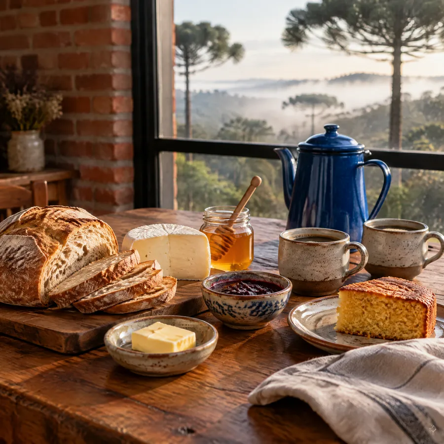
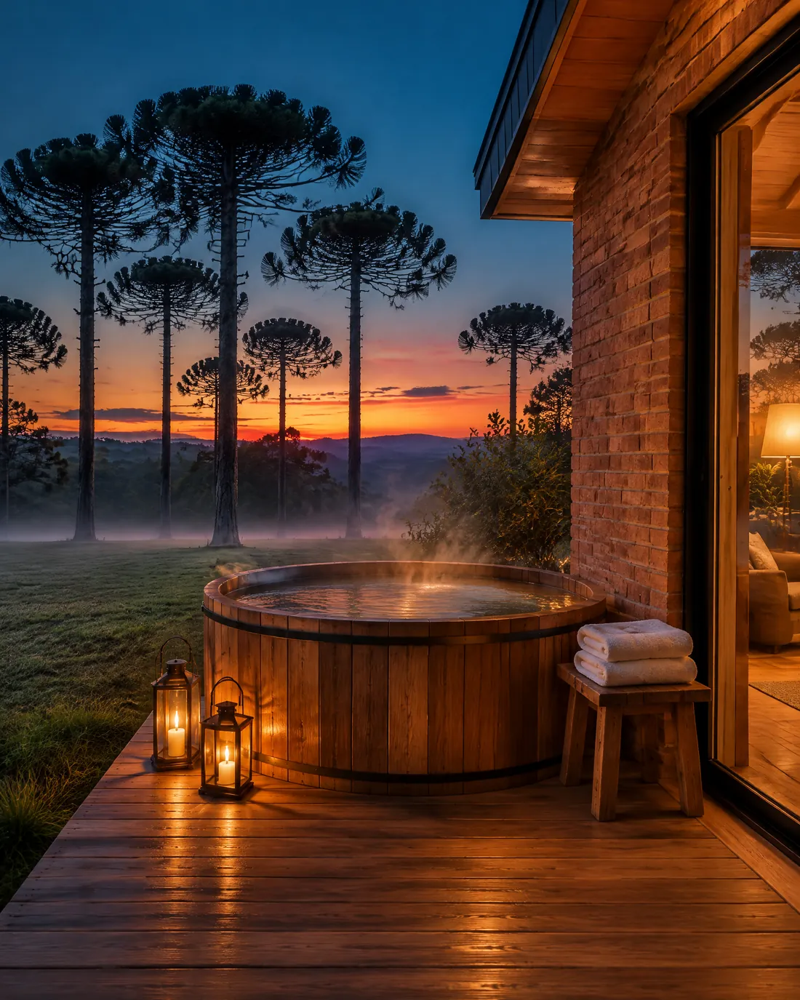

Prudentópolis · Paraná
Seu refúgio entre araucárias.
Chalés em construção em Prudentópolis. Entre na lista e saiba primeiro da abertura.
Imagens ilustrativas do projeto
I Por que vir
Três motivos para desligar aqui.
-
O dia termina na lareira.
Em julho, a mínima média em Prudentópolis é de 9 °C. O chalé nasce para esse frio: fogo aceso, vidro do chão ao teto e o pôr do sol inteiro na sua frente.
-
As cachoeiras gigantes são daqui.
O Salto São Francisco tem 196 metros de queda e é só um dos mais de 100 saltos da cidade. Você passa o dia na trilha e volta para um banho quente.
-
Ninguém do lado.
Poucos chalés, cada um com a sua vista. À noite você ouve o vento na araucária e o fogo estalando. Mais nada.
II O chalé por dentro
Tijolo, madeira e uma frente inteira de vidro.
Cada chalé é pensado para duas coisas: você ficar quente por dentro e olhar para fora. O resto é silêncio.

A sala
Lareira a lenha, sofá para dois e a vista inteira na sua frente.

O quarto
Cama grande, lençol de algodão e a neblina da manhã na janela.


O deck
Banheira de madeira com água quente, ao ar livre, para ver o céu mudar de cor.
O que estamos preparando*
- Lareira a lenha
- Banheira de água quente no deck
- Frente de vidro para o pôr do sol
- Cozinha equipada
- Wi-Fi
- Carro ao lado do chalé
* Imagens e itens ilustrativos. Os chalés estão em construção e o projeto final pode mudar.
III Por perto
A terra das cachoeiras gigantes.
Prudentópolis tem mais de 100 cachoeiras catalogadas. Algumas você vê do mirante, outras pedem trilha e estrada de chão. Dá para ficar dias sem repetir o passeio.
Na volta, a cidade tem mais de 100 igrejas, muitas de rito ucraniano, e a mesa farta de quem herdou essa cozinha.
Como chegar a Prudentópolis
- 67 kmde Guarapuava
- 98 kmde Ponta Grossa
- 203 kmde Curitiba
- 196mSaltoSão Francisco
- 126mSaltoSão Sebastião
- 84mSaltoSão João
- 64mSaltoBarão do Rio Branco
Alturas de queda e distâncias aproximadas, por estrada, até o centro da cidade.
IV Quem recebe
Somos de Prudentópolis. Estamos construindo cada chalé para receber você do jeito que gostamos de ser recebidos: casa quente, mesa posta e tempo de sobra.
Família Wolski · Prudentópolis, PR
V Antes de vir
O que já dá para saber.
Ainda estamos em obra. O que falta decidir, decidimos ouvindo quem quer vir.
Quando os chalés abrem?
Estamos em construção. Quem está na lista recebe a data de abertura antes de ela ser divulgada.
Onde ficam?
Em Prudentópolis, no Paraná, a cerca de 67 km de Guarapuava e 203 km de Curitiba. O endereço completo vai para quem está na lista.
Quanto vai custar a diária?
Os valores saem junto com a data de abertura. Quem está na lista recebe primeiro e escolhe as datas antes de todo mundo.
Posso levar meu pet? Tem café da manhã?
Estamos definindo esses detalhes agora. Diga na mensagem o que não pode faltar na sua estadia: a sua resposta ajuda a decidir.
Como eu reservo?
Direto com a gente, pelo WhatsApp. Você fala com quem vai receber você.
Entrar na lista me obriga a reservar?
Não. É só um aviso: você recebe a data e os valores e decide depois.
VI Lista de abertura
Seja dos primeiros a acender a lareira.
- i.Você manda uma mensagem.
- ii.Recebe a data e os valores antes de todo mundo.
- iii.Escolhe as suas datas com calma.
Sem compromisso. É só um aviso no seu WhatsApp.